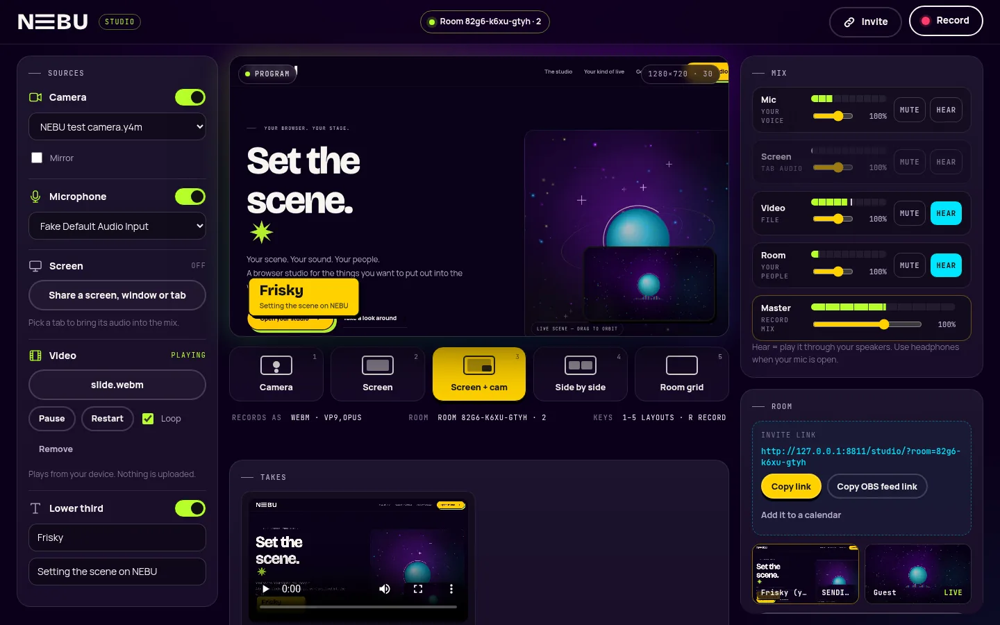

FOR THE ADMIN WHO LEAVESYour group.
Your group.
Held, not policed.
You run a Telegram, Discord, or class group and you do not want to be the policeman. NEBU keeps the door open, basic order in place, and the night on record.
01 / WHAT NEBU HOLDS
Admin installs in two minutes and can walk away. NEBU holds the room, runs the video lineup, keeps invites working, and records.
FACE / THE SHOWCASE
You are the showcase: camera, screen, or prepared video, previewed before it reaches the room. Set the scene once — it stays up when you step out.
02 / BUILT FOR THE ADMIN WHO LEAVES
One person holds the group. Zero desire to babysit it.
Two minutes to install — then the room runs itself.
You run a Telegram, Discord, or class group and you do not want to be the policeman. NEBU keeps the door open, basic order in place, and the night on record.
Camera up, overlay on, videos queued. You are the vitrina — the visible one everyone gathers around, even when the admin is long gone.
Teach the lesson, cut the episode, then close the laptop. The teacher comes back to the tape; the podcaster keeps the raw take to edit later.
03 / HOW THE NIGHT GOES

Open the studio. Set the scene, queue the videos, share one invite link. Two minutes, tops.
Walk away. The lineup keeps playing, the door stays open, basic order holds.
Come back to the tape. Download the recording and see what the room got up to.
04 / GOOD TO KNOW
NEBU is a browser studio for camera, screen, video, sound and rooms. Build a scene, balance the mix, bring people in and record the result to your device, all in one tab.
No. Open the studio in a current Chrome, Edge, Firefox or Safari and allow camera and microphone when asked. Screen sharing needs a desktop browser; on a phone you can still use your camera, mic and video files. OBS and Boom are optional and use their own software.
To nebu.quest/studio, right here. No account and no sign-in. Your sources, your mix and your recordings stay in your browser tab.
Yes. The program preview is local until you open a room. What you see there is exactly what your room receives and what a recording captures.
The room keeps running: your queued videos keep playing, your invite link keeps letting people in, and basic room order (mute, kick) stays in your hands from wherever you are. Record the output before you go and you will come back to the tape.
No. The streamer is the showcase — the face everyone gathers around. But NEBU is built for the admin who leaves: anyone with a Telegram, Discord, or class group who wants the room held without babysitting it. Teachers and podcasters use the same setup to record and revisit later.
Open a room and send the link: up to four people join from their browsers. Audio and video travel browser to browser. A small signaling service only introduces the browsers, and a Cloudflare relay steps in when a network blocks a direct path. Recording captures the program with the full mix, room included. Let everyone know before you record a shared session.
Straight to your device as a WebM file (MP4 in Safari). Nothing is uploaded and nothing is kept on a server. Takes live in the tab until you download or discard them, so save the ones you want before you close it.
ON AIR / OBS BROWSER SOURCE
Every room has a clean feed link: your scene, full frame, no studio controls. OBS loads it as a Browser Source and receives it like any guest would.
The feed link lives in the studio’s Room panel. Paste it into the Browser source URL field, then match these settings.
URL: your OBS feed link (studio → Room → Copy OBS feed link) Width: 1920 Height: 1080 FPS: 30 Control audio via OBS: CHECKED Shutdown source when not visible: UNCHECKED
On air / Boom
Boom is a macOS virtual-camera app — an OBS alternative with dynamic layouts, overlays, and Stream Deck support. Select the Boom virtual camera as your camera source in the NEBU studio, then use Boom layouts and overlays for a produced feed. Requires macOS 13 or later.
Install Boom and enable its virtual camera.
In the NEBU studio camera picker, choose the Boom camera.
Frame with Boom layouts, then go live.
If the browser was open while Boom installed, quit and reopen it so the Boom camera appears in the picker.
Boom is a separate paid macOS app, not included with NEBU.
On air / Continuity Camera
Apple Continuity Camera turns a nearby iPhone into your Mac camera and microphone — wireless or over USB. Pick it in the NEBU studio picker like any other camera.
Keep your iPhone nearby, signed into the same Apple Account, with Wi-Fi and Bluetooth on — or plug it in with USB.
In the NEBU studio camera picker, choose your iPhone.
Mount it above your display, frame the shot, and go live.
If the iPhone does not appear: lock and unlock it, toggle Wi-Fi and Bluetooth, then quit and reopen the browser.
Apple Continuity Camera needs macOS Ventura and iOS 16 on the same Apple Account. NEBU sees it as a camera.